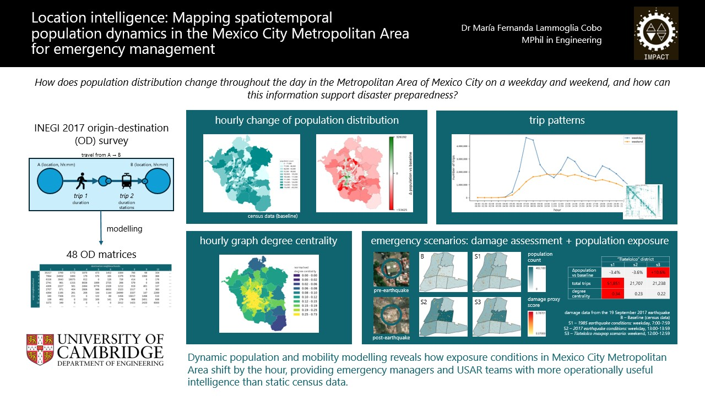

Reference and Preliminary Situational Awareness Maps for Search and Rescue
Search & Rescue Operations · Led by María Fernanda Lammoglia CoboThis project integrates geospatial open-source information into a user-friendly platform that generates reference and preliminary situational awareness maps for search and rescue operations.
The aim is to provide practical mapping support in time for deployment, helping teams build early situational awareness using accessible geospatial information before and during response operations.